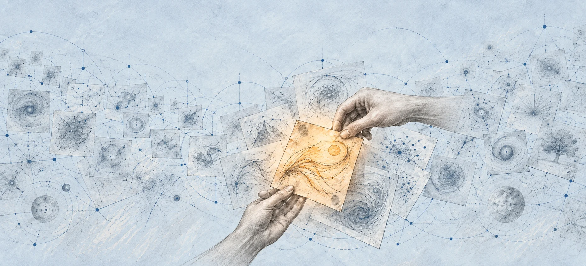
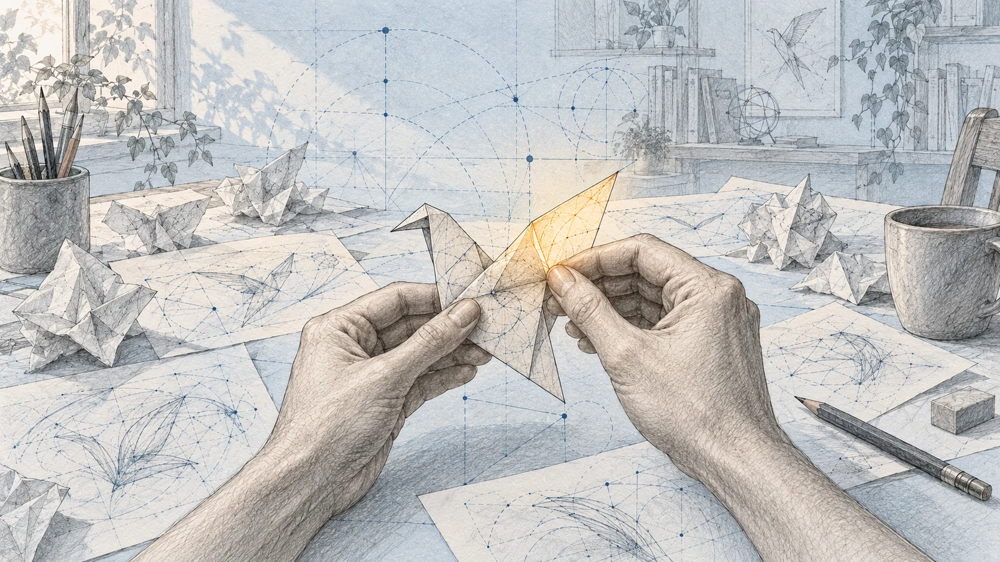

AI Summit PJAIT · Panel dyskusyjny
Od sztuki po najbrudniejszą robotę
Tomek Bagiński · Przemysław „Psyho” Dębiak
Prowadzi Adrian Bąk

Co zostaje dla człowieka, kiedy maszyna potrafi coraz więcej? Rozmowa o radości tworzenia, wartości własnej pracy i przyszłości, której jeszcze nie umiemy dobrze przewidzieć.
Najważniejsze wątki
Nie wszystko da się policzyć wynikiem
Psyho patrzy na AI z doświadczenia konkursów programistycznych. Bagiński — z pracy nad filmem, obrazem i emocjami widza. Spotykają się przy pytaniu, które wykracza poza oba zawody: czy chcemy tylko otrzymać dobry rezultat, czy również sami przeżyć drogę do niego?
Rozmowa nie przynosi prostego werdyktu o zastępowaniu ludzi. Pokazuje, że szybsze wykonanie zadania, sens twórczości i wartość dla odbiorcy to różne sprawy. Kończy się ostrożną nadzieją: przy całej niepewności pojedynczy człowiek ma dziś więcej możliwości nauki i realizowania pomysłów.
- Własny udział w tworzeniu może być wartością samą w sobie.
- Generowanie materiału przyspiesza; ludzki wybór i ocena wciąż wymagają czasu.
- Zalew tanich treści utrudnia odnalezienie dobrych prac i nowych twórców.
- Większa sprawczość jednostki współistnieje z pytaniami o władzę, bezpieczeństwo i przyszłość.
Radość z samodzielnego rozwiązania
Psyho opisuje konkurs optymalizacyjny jako mały proces badawczy: uczestnik szuka pomysłu, pisze program, mierzy wynik i próbuje kolejnego rozwiązania. Jasne zasady oraz wspólna miara sukcesu czynią tę pracę — w jego słowach — czystą. Brudniejsza okazuje się późniejsza otoczka medialna i polityczna.
Postęp specjalnie przygotowanych systemów AI zmienia jednak samą rywalizację. Dla Psyho ważna jest nie tylko możliwość wygranej. Używanie agentów oddaje dużą część twórczej kontroli maszynie i wprowadza losowość wyników. Zmienia to warunki zabawy. Gdy satysfakcja pochodziła z własnego wysiłku umysłowego, lepszy wynik nie musi rekompensować utraty tego doświadczenia.
W transkrypcie · około 00:16 ↗ · Czytaj fragment skryptu ↗ · Obejrzyj ten fragment ↗
Chcę, żeby to było moje
Bagiński przypomina, że sztuka nie sprowadza się do przemysłowej wydajności. Maszyna może zrobić coś szybciej, a nawet lepiej, ale dla autora istotne jest również to, że praca jest jego własna. Dzieło wiąże się z emocjami i relacją z publicznością; liczba wyprodukowanych obrazów tej relacji nie mierzy.
AI może jednocześnie skracać żmudne etapy i pomagać dopracować osobistą wizję. Rozmówcy badają granicę między narzędziem, które ułatwia wykonanie, a przekazaniem mu decyzji twórczych. Ta granica zależy od człowieka i od tego, co daje mu radość.
W transkrypcie · około 07:52 ↗ · Czytaj fragment skryptu ↗ · Obejrzyj ten fragment ↗
Szybciej powstało. Czy jest dobre?
Gra potrzebuje czegoś więcej niż działającego kodu i gotowych obrazków. Trzeba w nią grać, sprawdzać, czy daje przyjemność, i podejmować mnóstwo drobnych decyzji. Przyspieszenie produkcji nie oznacza automatycznego przyspieszenia ludzkiego doświadczenia.
Podobnie w filmie: otrzymanie materiału nie zastępuje montażu, wyczucia emocji ani wyboru właściwej wersji. Bagiński porównuje pracę z generowanym materiałem do pracy montażysty, który też zaczyna od cudzych ujęć, a jednak wykonuje pracę artystyczną. Człowiek oceniający rezultat może stać się ograniczeniem tempa całego procesu.
W transkrypcie · około 15:57 ↗ · Czytaj fragment skryptu ↗ · Obejrzyj ten fragment ↗

Małe pomysły dostają swoją szansę
Uczenie maszynowe od dawna pomaga przy filmie i animacji. Nowa fala narzędzi poszerza jednak zakres pomysłów, które opłaca się w ogóle realizować. Bagiński podaje przykład krótkich żartów: wcześniej wymagałyby miesięcy pracy, dziś mogą powstać w ciągu godzin lub dnia.
To zmienia codzienność autora. Może sprawdzić pomysł, który dawniej pozostałby w głowie. Nadal potrzebuje smaku, intencji i poprawek.
W transkrypcie · około 24:20 ↗ · Czytaj fragment skryptu ↗ · Obejrzyj ten fragment ↗
W tłumie obrazów trudniej zobaczyć człowieka
Koszt produkowania przeciętnych treści gwałtownie maleje, ale koszt ich oglądania i oceniania nie spada w tym samym tempie. Rozmówcy zastanawiają się, jak zalew takiego materiału wpływa na ambitną pracę. Problemem może być już nie samo stworzenie czegoś dobrego, lecz dotarcie do odbiorcy.
Rośnie znaczenie marketingu, filtrów i społecznego kontekstu. Rozpoznawalnym twórcom łatwiej przyciągnąć uwagę, początkującym — trudniej się przebić. Bagiński wskazuje także, że kreatywność może przesuwać się ku budowaniu nowych opowieści i sytuacji społecznych: wartość dzieła powstaje również wokół niego.
W transkrypcie · około 31:18 ↗ · Czytaj fragment skryptu ↗ · Obejrzyj ten fragment ↗
Przyszłość bez wygodnej mapy
Przy pytaniach o ostrzeżenia szefów firm AI rozmowa przechodzi od warsztatu do władzy i narracji. Publiczne deklaracje funkcjonują także w świecie biznesu, interesów i konkurencji. Psyho zwraca uwagę na koncentrację wpływu oraz na napięcie między bezpieczeństwem a rozproszeniem kontroli nad potężnymi systemami.
Rozmowa ujawnia trudność przewidywania. Bagiński mówi o okresie, w którym stare modele świata tracą użyteczność, a nowe jeszcze się nie ułożyły. Z tego powodu nie daje młodym ludziom prostej recepty zawodowej. To osobiste oceny i scenariusze, a nie zapowiedź ustalonego biegu wydarzeń.
W transkrypcie · około 37:55 ↗ · Czytaj fragment skryptu ↗ · Obejrzyj ten fragment ↗
Pomysł może stać się czymś własnym
Finał wraca do skali pojedynczej osoby. Psyho dostrzega większą niż wcześniej możliwość uczenia się, budowania projektów i zakładania własnych przedsięwzięć. Bagiński zgadza się z optymistycznym wydźwiękiem. W rozmowie pojawia się przykład kogoś, kto dotąd miał głównie pomysły, a teraz może częściej sam nadać im postać.
Ta nadzieja nie usuwa obaw obecnych w rozmowie. Daje jednak konkretny punkt zaczepienia: można sprawdzić własny pomysł i uczyć się podczas pracy, z mniejszą barierą wejścia niż wcześniej. Obaj rozmówcy widzą w tych możliwościach powód, by samemu próbować tworzyć.
W transkrypcie · około 50:45 ↗ · Czytaj fragment skryptu ↗ · Obejrzyj ten fragment ↗
Cała rozmowa
Podstawą jest fragment długości 52 minut 56 sekund, zaczynający się w trakcie pytania. Luki w pełnym transkrypcie ponownie porównano z oficjalnym nagraniem PJAIT, jego automatycznymi napisami i niezależnym automatycznym odczytem dźwięku. Zachowano wszystkie lokalne znaczniki czasu; odzyskane treści uzupełniono, a nierozstrzygnięte słowa i pominięte uwagi organizacyjne jawnie oznaczono. Zapis lekko zredagowano dla czytelności; opinie i prognozy należą do rozmówców.
Streszczenie redakcyjne na podstawie nagrania. Opinie i przewidywania należą do rozmówców. Panel „Od sztuki po najbrudniejszą robotę”, 16 września 2026. Program konferencji. Szkic tła i prompt.